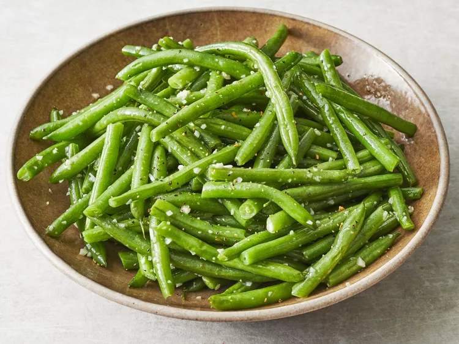

Recipe for Garlic Green Beans

Description
Green bean recipes make the greatest side dishes. They take very little
time to cook and, depending on the method, even less time to prep. This
easy green bean recipe preps in just 5 minutes, cooks in about 10
(depending on how crunchy you like your green beans), and is ready in 15
minutes.
Ingredients
- 1 pound of fresh green beans, trimmed and snapped in half
- 3 tablespoons of butter
- 3 cloves garlic, minced
- 1/8 teaspoon lemon-pepper season, or more to your preference
- Salt to your taste
Steps
- Gather the ingredients.
-
Place green beans into a large skillet and cover with water; bring to a
boil. Reduce heat to medium-low and simmer until beans just start to
soften, 3 to 5 minutes.
-
Drain and return to the skillet. Add butter and stir until melted, 1 to
2 minutes.
- Add garlic; cook until tender and fragrant, 1 to 2 minutes.
- Season with lemon-pepper seasoning and salt before serving.